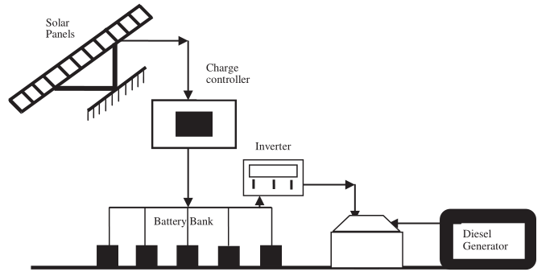
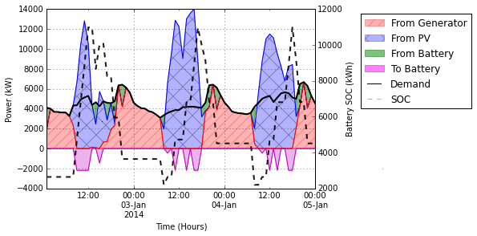

Overview¶
The main objective of the Micro-grid library is to determine the combination of install capacities of PV, Lion-Ion Batteries and diesel generators that makes the lowest Net Present Cost for the life time of the project and accomplish the constraints of the system. For this objective the problem is express as a linear programming problem.
Fig. 1. The considered micro-grid typology: adapted from[1].
The main optimization variables are the size of the PV array, battery bank and diesel generator that minimize the objective function and satisfy the physical, technical and economical constraints of the different elements in the micro-grid. The optimal dispatch of energy is also a result of the optimization process. The time step of the demand load and the irradiation is 1 hour and the optimization horizon is 1 year.
After the optimization process finish and the results are found, a post-processing tool is used in order to present the results and the most important parameters in an excel sheet, finally a Figure with the energy flow from the choose days is created.
Fig. 2. Example of a figure created by the micro-grids library.
Reference¶
[1] Agarwal N., Kumar A., Varun., Optimization of grid independent hybrid PV-diesel-battery system for power generation in remote villages of uttar Pradesh, india. Energy for Sustainable Development 2013; 17:210-219